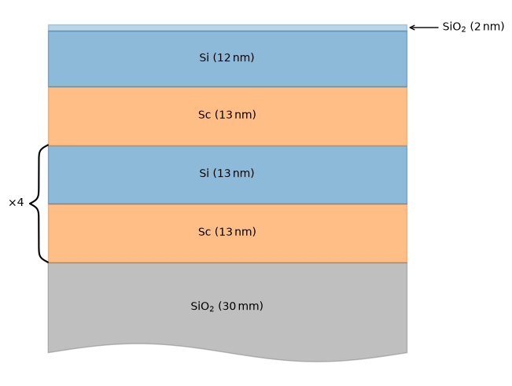
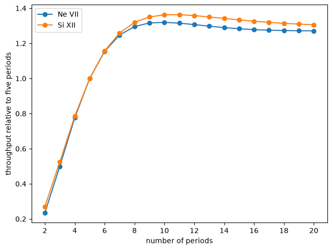
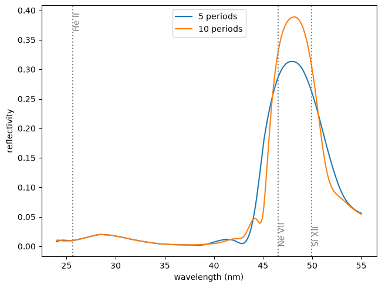
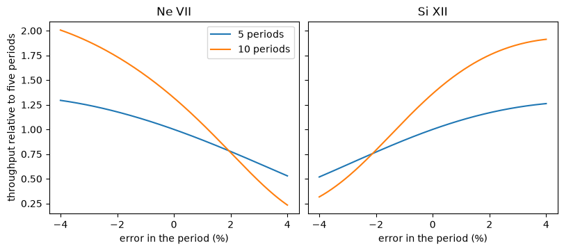

Coating Study#
The primary mirror and the gratings of ESIS-II are coated with a multilayer
of Si and Sc,
multilayer_SiSc().
Its design has five periods,
which keeps the coating thin in case a thicker one is more likely to fail.
The test sample which Eric Gullikson measured,
multilayer_SiSc_sample_measured(),
has ten.
This report compares coatings with different numbers of periods, finds how closely the period of each has to be held, and collects the parameters of the coating into a specification which can be sent to the coater.
[1]:
import dataclasses
import numpy as np
import scipy.optimize
import matplotlib.ticker
import matplotlib.pyplot as plt
import astropy.units as u
import astropy.visualization
import pandas
import named_arrays as na
import optika
import esis
The Design#
Load the design of the coating and draw its layers.
Its top layer is Si under a native oxide,
and the widths of its interfaces are those fit to the measurement of the
sample,
multilayer_SiSc_sample_fit().
[2]:
design = esis.flights.f2.optics.materials.multilayer_SiSc()
with astropy.visualization.quantity_support():
fig, ax = plt.subplots(constrained_layout=True)
design.plot_layers(
ax=ax,
thickness_substrate=20 * u.nm,
)
ax.set_axis_off()
ax.autoscale_view()

To change the number of periods and the period of the design, replace the thicknesses of its layers, keeping the fraction of each period which is Sc, and the thickness of the top Si layer which the oxide consumed.
[3]:
oxide, top, Sc, periodic = design.layers
Si_period, Sc_period = periodic.layers
period_design = Si_period.thickness + Sc_period.thickness
num_periods_design = periodic.num_periods + 1
fraction_Sc = (Sc_period.thickness / period_design).to(u.dimensionless_unscaled)
thickness_consumed = Si_period.thickness - top.thickness
def coating(
num_periods: int,
period: u.Quantity,
) -> optika.materials.MultilayerMirror:
"""
The design, with the given number of periods and period.
Parameters
----------
num_periods
The number of periods, at least two.
period
The thickness of a period, a layer of Si and a layer of Sc.
"""
thickness_Si = (1 - fraction_Sc) * period
thickness_Sc = fraction_Sc * period
return dataclasses.replace(
design,
layers=[
oxide,
dataclasses.replace(top, thickness=thickness_Si - thickness_consumed),
dataclasses.replace(Sc, thickness=thickness_Sc),
dataclasses.replace(
periodic,
layers=[
dataclasses.replace(Si_period, thickness=thickness_Si),
dataclasses.replace(Sc_period, thickness=thickness_Sc),
],
num_periods=num_periods - 1,
),
],
)
def period(multilayer: optika.materials.MultilayerMirror) -> u.Quantity:
"""
The period of a multilayer made by :func:`coating`.
Parameters
----------
multilayer
The multilayer to measure.
"""
return sum(layer.thickness for layer in multilayer.layers[~0].layers).to(u.nm)
def thickness(multilayer: optika.materials.MultilayerMirror) -> u.Quantity:
"""
The total thickness of the layers of a multilayer, its oxide included.
Parameters
----------
multilayer
The multilayer to measure.
"""
return sum(layer.thickness for layer in multilayer.layers).to(u.nm)
def reflectivity(
multilayer: optika.materials.MultilayerMirror,
wavelength: u.Quantity | na.AbstractScalar,
angle: u.Quantity | na.AbstractScalar = 0 * u.deg,
) -> na.AbstractScalar:
"""
The reflectivity of a multilayer to unpolarized light.
Parameters
----------
multilayer
The multilayer which reflects the light.
wavelength
The wavelength of the light in vacuum.
angle
The angle of incidence.
"""
rays = optika.rays.RayVectorArray(
wavelength=wavelength,
direction=na.Cartesian3dVectorArray(np.sin(angle), 0, np.cos(angle)),
)
return multilayer.efficiency(
rays=rays,
normal=na.Cartesian3dVectorArray(0, 0, -1),
)
print(f"{num_periods_design} periods of {period_design:.1f}, Sc fraction {fraction_Sc:.2f}")
5 periods of 26.0 nm, Sc fraction 0.50
The two lines ESIS-II observes are Ne VII 46.5 nm and Si XII 49.9 nm. The coating should also reflect little at He II 25.6 nm, since the gratings send its second order to where they send the first order of a wavelength twice as long, which is inside the passband.
[4]:
f2 = esis.flights.f2
wavelength_He_II = 256.317 * u.AA
wavelength = na.ScalarArray(
ndarray=u.Quantity(
[
wavelength_He_II,
f2.wavelength_Ne_VII,
f2.wavelength_Si_XII,
]
).to(u.nm),
axes="line",
)
names = ["He II", "Ne VII", "Si XII"]
instrument = f2.optics.design_single(num_distribution=0)
print(
f"passband: {na.as_named_array(instrument.wavelength_min).ndarray.to(u.nm):.1f} "
f"to {na.as_named_array(instrument.wavelength_max).ndarray.to(u.nm):.1f}"
)
print(f"second order of He II: {2 * wavelength_He_II.to(u.nm):.1f}")
passband: 43.0 nm to 53.4 nm
second order of He II: 51.3 nm
Angles of Incidence#
The coating reflects the light a few degrees from the normal. Trace rays at both lines through one channel of the design, from every position in the field and the pupil, and take the angle of incidence on each optic as half the angle through which it turns the rays, which on a mirror is the angle of incidence itself.
[5]:
system = instrument.system
rays = system.raytrace(
wavelength=wavelength[{"line": slice(1, None)}],
efficiency=False,
).outputs
names_surface = [surface.name for surface in system.surfaces_all]
unvignetted = rays.unvignetted[{system.axis_surface: ~0}]
def angle_incidence(name: str) -> na.AbstractScalar:
"""
Half the angle through which the named surface turns the rays, or NaN
for the rays which do not reach the sensor.
Parameters
----------
name
The name of the surface.
"""
index = names_surface.index(name)
before = rays.direction[{system.axis_surface: index - 1}]
after = rays.direction[{system.axis_surface: index}]
cos = -(before @ after) / (before.length * after.length)
angle = (np.arccos(cos) / 2).to(u.deg)
return np.where(unvignetted, angle, np.nan * u.deg)
angle = {name: angle_incidence(name) for name in ["primary", "grating"]}
print(
pandas.DataFrame(
{
"optic": list(angle),
"min (deg)": [np.nanmin(a).ndarray.value for a in angle.values()],
"mean (deg)": [np.nanmean(a).ndarray.value for a in angle.values()],
"max (deg)": [np.nanmax(a).ndarray.value for a in angle.values()],
}
)
.round(2)
.to_string(index=False)
)
optic min (deg) mean (deg) max (deg)
primary 0.64 1.03 1.35
grating 1.64 2.10 2.45
Compare the reflectivity of the design at the largest of these angles with that at normal incidence.
[6]:
angle_max = max(np.nanmax(a).ndarray for a in angle.values())
ratio = reflectivity(design, wavelength, angle_max) / reflectivity(design, wavelength)
print(f"at {angle_max:.2f}, relative to normal incidence:")
for name, r in zip(names, ratio.ndarray):
print(f" {name}: {r:.3f}")
at 2.45 deg, relative to normal incidence:
He II: 0.996
Ne VII: 1.004
Si XII: 0.992
The change is small, so the rest of this report computes the reflectivity at normal incidence.
Number of Periods#
More periods narrow the peak of the reflectivity, so for each number of periods, choose the period which maximizes the geometric mean of the reflectivity at the two lines, keeping the fraction of each period which is Sc.
[7]:
def period_best(num_periods: int) -> u.Quantity:
"""
The period which maximizes the geometric mean of the reflectivity at
Ne VII and Si XII, for the given number of periods.
Parameters
----------
num_periods
The number of periods.
"""
def merit(period: float) -> float:
r = reflectivity(coating(num_periods, period * u.nm), wavelength)
return -np.sqrt(r[{"line": 1}] * r[{"line": 2}]).ndarray
result = scipy.optimize.minimize_scalar(
merit,
bounds=(24, 28),
method="bounded",
options=dict(xatol=1e-3),
)
return result.x * u.nm
num_periods = list(range(2, 21))
coatings = {n: coating(n, period_best(n)) for n in num_periods}
reflectivities = na.stack(
[reflectivity(c, wavelength) for c in coatings.values()],
axis="num_periods",
)
Tabulate the period, the total thickness, and the reflectivity at each line of each coating. The throughput of the two bounces, off the primary mirror and off the grating, is the square of the reflectivity of one, and is given relative to that of the coating with five periods. The last column is the throughput at He II relative to that at Si XII, which scales the light of He II which leaks into the image of Si XII.
[8]:
r_five = reflectivity(coatings[num_periods_design], wavelength)
throughput = np.square(reflectivities / r_five)
r = reflectivities
table = pandas.DataFrame(
{
"periods": num_periods,
"period (nm)": [period(c).value for c in coatings.values()],
"thickness (nm)": [thickness(c).value for c in coatings.values()],
"R Ne VII": r[{"line": 1}].ndarray,
"R Si XII": r[{"line": 2}].ndarray,
"R He II": r[{"line": 0}].ndarray,
"throughput Ne VII": throughput[{"line": 1}].ndarray,
"throughput Si XII": throughput[{"line": 2}].ndarray,
"(R He II / R Si XII)^2": np.square(r[{"line": 0}] / r[{"line": 2}]).ndarray,
}
)
print(table.round(4).to_string(index=False))
periods period (nm) thickness (nm) R Ne VII R Si XII R He II throughput Ne VII throughput Si XII (R He II / R Si XII)^2
2 26.9104 54.6607 0.1385 0.1362 0.0114 0.2345 0.2693 0.0070
3 26.4553 80.2060 0.2022 0.1901 0.0125 0.4997 0.5250 0.0043
4 26.2580 105.8721 0.2518 0.2324 0.0106 0.7755 0.7845 0.0021
5 26.1732 131.7061 0.2860 0.2624 0.0098 1.0000 1.0000 0.0014
6 26.1402 157.6809 0.3073 0.2822 0.0099 1.1544 1.1566 0.0012
7 26.1307 183.7549 0.3194 0.2944 0.0101 1.2472 1.2590 0.0012
8 26.1315 209.8919 0.3255 0.3014 0.0101 1.2957 1.3193 0.0011
9 26.1361 236.0651 0.3280 0.3049 0.0101 1.3159 1.3502 0.0011
10 26.1420 262.2596 0.3285 0.3063 0.0101 1.3194 1.3624 0.0011
11 26.1471 288.4582 0.3279 0.3064 0.0101 1.3148 1.3632 0.0011
12 26.1514 314.6566 0.3269 0.3058 0.0101 1.3066 1.3581 0.0011
13 26.1546 340.8495 0.3258 0.3049 0.0101 1.2977 1.3502 0.0011
14 26.1567 367.0341 0.3248 0.3039 0.0101 1.2896 1.3417 0.0011
15 26.1579 393.2092 0.3239 0.3030 0.0101 1.2830 1.3334 0.0011
16 26.1584 419.3745 0.3233 0.3022 0.0101 1.2780 1.3260 0.0011
17 26.1579 445.5249 0.3229 0.3014 0.0101 1.2749 1.3192 0.0011
18 26.1574 471.6725 0.3226 0.3008 0.0101 1.2727 1.3139 0.0011
19 26.1565 497.8127 0.3225 0.3003 0.0101 1.2716 1.3094 0.0011
20 26.1554 523.9472 0.3224 0.2999 0.0101 1.2712 1.3058 0.0011
The period of the design is close to the best one for five periods. Compare the throughput of the two.
[9]:
design (26.00 nm) relative to five periods of 26.17 nm:
He II: 0.934
Ne VII: 1.065
Si XII: 0.929
Plot the throughput of the two bounces at each line against the number of periods.
[10]:
n = na.ScalarArray(np.array(num_periods), axes="num_periods")
fig, ax = plt.subplots(constrained_layout=True)
for i, color in [(1, "tab:blue"), (2, "tab:orange")]:
na.plt.plot(
n,
throughput[{"line": i}],
ax=ax,
marker="o",
color=color,
label=names[i],
)
ax.xaxis.set_major_locator(matplotlib.ticker.MaxNLocator(integer=True))
ax.set_xlabel("number of periods")
ax.set_ylabel("throughput relative to five periods")
ax.legend();

Plot the reflectivity of the coatings with five and ten periods across the passband and around He II.
[11]:
wavelength_plot = na.linspace(24, 55, axis="wavelength", num=621) * u.nm
with astropy.visualization.quantity_support():
fig, ax = plt.subplots(constrained_layout=True)
for num, color in [(num_periods_design, "tab:blue"), (10, "tab:orange")]:
na.plt.plot(
wavelength_plot,
reflectivity(coatings[num], wavelength_plot),
ax=ax,
color=color,
label=f"{num} periods",
)
# label He II at the top and the two lines at the bottom, where the
# curves are not
for name, w, y, va in [
(names[0], wavelength.ndarray[0], 0.97, "top"),
(names[1], wavelength.ndarray[1], 0.03, "bottom"),
(names[2], wavelength.ndarray[2], 0.03, "bottom"),
]:
ax.axvline(w, color="gray", linestyle=":")
ax.text(
w,
y,
f" {name}",
rotation=90,
va=va,
color="gray",
transform=ax.get_xaxis_transform(),
)
ax.set_xlabel(f"wavelength ({ax.get_xlabel()})")
ax.set_ylabel("reflectivity")
ax.legend();

Tolerance on the Period#
A coating is never deposited with exactly the period it was designed for, and the more periods it has, the narrower its peak. Scale the period of the coatings with five and ten periods by up to 4% either way, the same on the primary mirror and the grating, and compare the throughput of the two bounces at each line with that of the coating with five periods and no error.
[12]:
error = na.linspace(-4, 4, axis="error", num=161) * u.percent
throughput_error = {}
for num in [num_periods_design, 10]:
r = na.stack(
[
reflectivity(coating(num, period(coatings[num]) * (1 + e)), wavelength)
for e in error.ndarray
],
axis="error",
)
throughput_error[num] = np.square(r / r_five)
fig, axs = plt.subplots(
ncols=2,
sharey=True,
constrained_layout=True,
figsize=(8, 3.5),
)
for ax, i in zip(axs, [1, 2]):
for num, color in [(num_periods_design, "tab:blue"), (10, "tab:orange")]:
na.plt.plot(
error,
throughput_error[num][{"line": i}],
ax=ax,
color=color,
label=f"{num} periods",
)
ax.set_title(names[i])
ax.set_xlabel("error in the period (%)")
axs[0].set_ylabel("throughput relative to five periods")
axs[0].legend();

An error in the period moves the peak toward one line and away from the other, and the peak of the coating with ten periods is the narrower. Find the range of errors over which the coating with ten periods still has more throughput at both lines than the coating with five periods would have with the same error.
[13]:
ten periods beat five from -2.10% to +1.90%
Take the tolerance on the period of each coating to be the range of errors over which its throughput at both lines stays within 10% of its own throughput with no error.
[14]:
def tolerance(
throughput: na.AbstractScalar,
fraction: float = 0.9,
) -> tuple[float, float]:
"""
The smallest and largest errors in the period, in percent, at which the
throughput at Ne VII and Si XII is at least the given fraction of the
throughput with no error.
Parameters
----------
throughput
The throughput at each line as a function of the error in the period.
fraction
The least acceptable fraction of the throughput with no error.
"""
throughput = throughput[{"line": slice(1, None)}]
nominal = throughput[{"error": error.shape["error"] // 2}]
ok = (throughput / nominal >= fraction).all(axis="line")
e = error.ndarray.value[ok.ndarray]
return e.min(), e.max()
for num in [num_periods_design, 10]:
low, high = tolerance(throughput_error[num])
print(f"{num} periods: {low:+.2f}% to {high:+.2f}%")
5 periods: -0.90% to +0.90%
10 periods: -0.50% to +0.50%
Specification#
Collect the parameters of a coating with ten periods into a table which can be sent to the coater. The reflectivities are those of the model, which takes its interfaces and oxide from the sample.
[15]:
num = 10
spec = coatings[num]
low, high = tolerance(throughput_error[num])
r = reflectivity(spec, wavelength)
r_plot = reflectivity(spec, wavelength_plot)
peak = wavelength_plot[{"wavelength": int(r_plot.ndarray.argmax())}]
rows = [
("materials", "Si/Sc, Si on top"),
("number of periods", f"{num}"),
("period", f"{period(spec):.2f}"),
(
"tolerance on the period",
f"{low:+.1f}% to {high:+.1f}% "
f"({low / 100 * period(spec):+.2f} to {high / 100 * period(spec):+.2f})",
),
("Sc fraction of each period", f"{fraction_Sc:.2f}"),
("total thickness", f"{thickness(spec):.0f}"),
]
for name, a in angle.items():
rows.append(
(
f"angle of incidence on the {name}",
f"{np.nanmin(a).ndarray.value:.1f} to {np.nanmax(a).ndarray:.1f}",
)
)
rows.append(("peak of the reflectivity (model)", f"{peak.ndarray:.1f}"))
for name, w, ri in zip(names, wavelength.ndarray, r.ndarray):
rows.append((f"reflectivity at {name} {w:.2f} (model)", f"{ri:.3f}"))
print(pandas.DataFrame(rows, columns=["parameter", "value"]).to_string(index=False))
parameter value
materials Si/Sc, Si on top
number of periods 10
period 26.14 nm
tolerance on the period -0.5% to +0.5% (-0.13 nm to +0.13 nm)
Sc fraction of each period 0.50
total thickness 262 nm
angle of incidence on the primary 0.6 to 1.4 deg
angle of incidence on the grating 1.6 to 2.5 deg
peak of the reflectivity (model) 48.2 nm
reflectivity at He II 25.63 nm (model) 0.010
reflectivity at Ne VII 46.52 nm (model) 0.328
reflectivity at Si XII 49.94 nm (model) 0.306